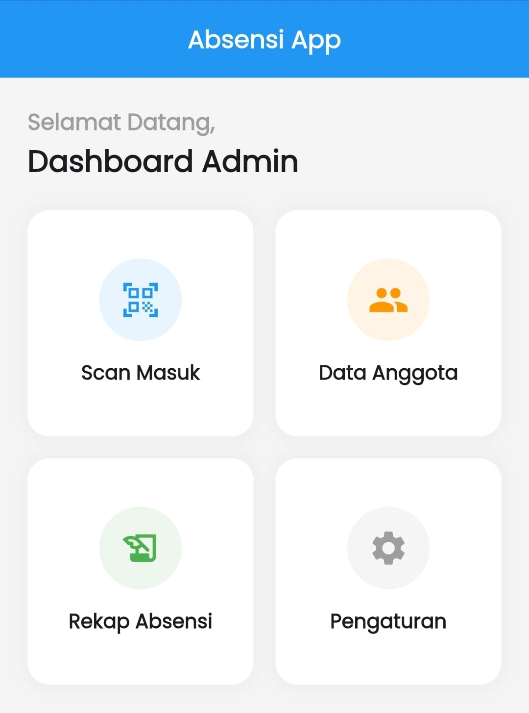
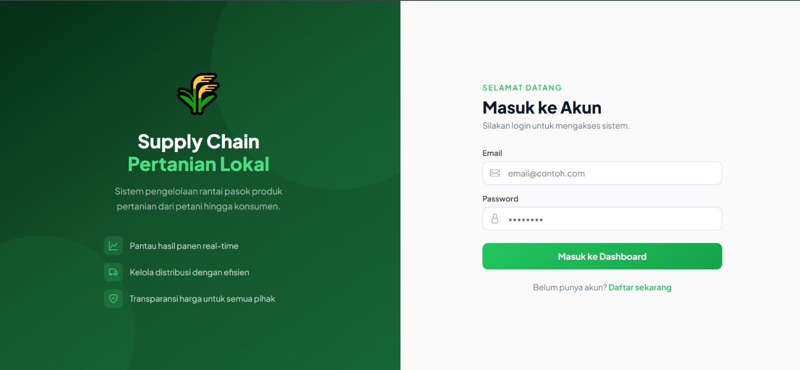

Skill & Keahlian
Kombinasi kemampuan teknis dan interpersonal yang saya miliki.
Hard Skill & Technical
HTML & CSS (Basic)
Python (Basic)
PHP (Basic)
Database MySQL
Design (Figma, AI, Canva)
Video Editing (CapCut)
Computer Troubleshooting (Basic)
Microsoft Office
Google Workspace
Network (Basic)
Soft Skill
Public Speaking
Problem Solving
Critical & Analytical Thinking
Communication
Adaptability
Continuous Learning
Teamwork
Proyek Unggulan
Kumpulan proyek web dan mobile yang pernah saya bangun.
 WEB
WEB
Website Angel Brownies
Platform toko Kue Brownies berbasis web lengkap dengan katalog dinamis dan manajemen basis data MySQL.

MOBILEAbsensi PRO
Aplikasi manajemen absensi mobile berkinerja tinggi yang dibangun dengan Flutter. Dilengkapi dengan sistem penyimpanan database lokal untuk memastikan pencatatan kehadiran yang cepat, aman, dan dapat diakses tanpa Internet.

WEBWeb Supplychain
Manajemen Supply Chain Pertanian lokal, Mendukung Transparansi dan kestabilan harga .